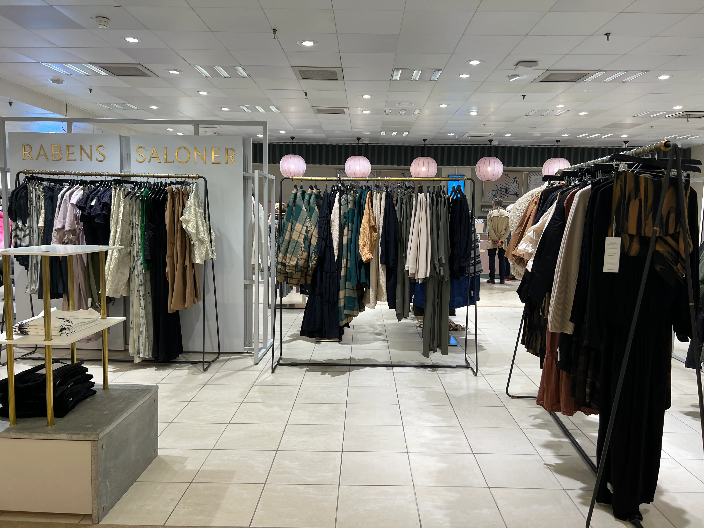
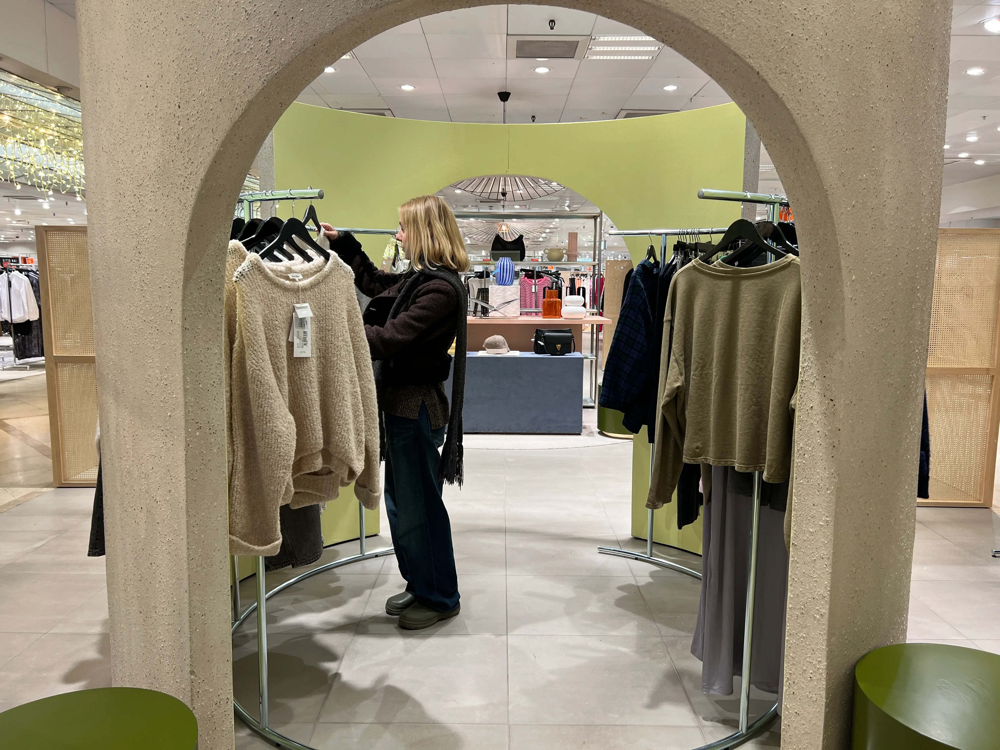
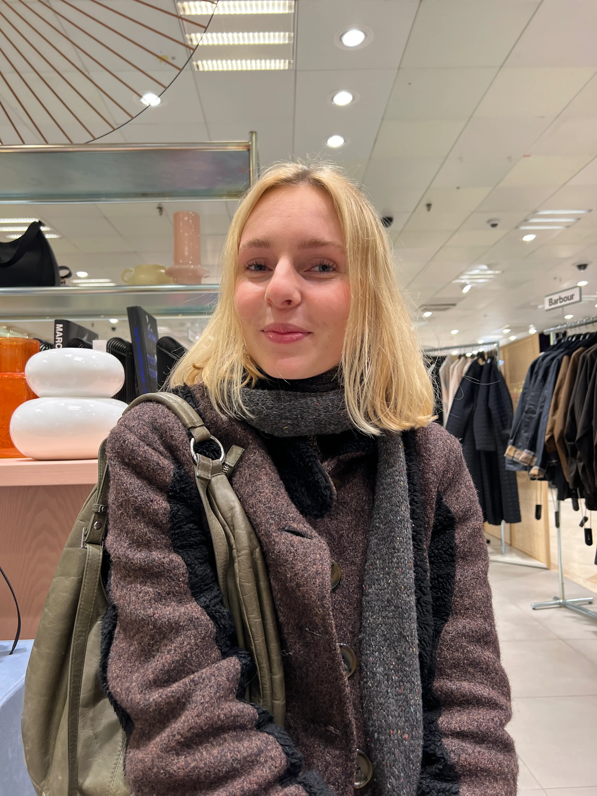
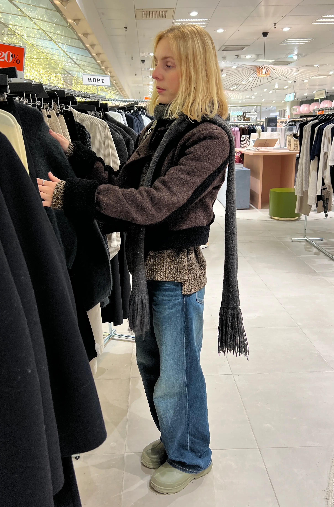

"PASSION FOR FASHION"
MEDVIRKENDE: Sofia Dalsgaard
I denne 1-minuts video inviterer Sofia Dalsgaard dig ind i hendes pulserende verden af mode, hvor lidenskab og indflydelse smelter sammen. Som modeinfluencer deler Sofia ikke blot sin kærlighed til tøj, men også sin rejse med at samarbejde med spændende brands og forme tendenser. Tag med på en hurtig rejse gennem Sofias passion for mode og opdag, hvordan hun kombinerer sit kreative udtryk med en professionel tilgang til influencerindustrien.



